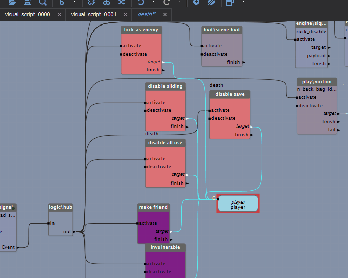
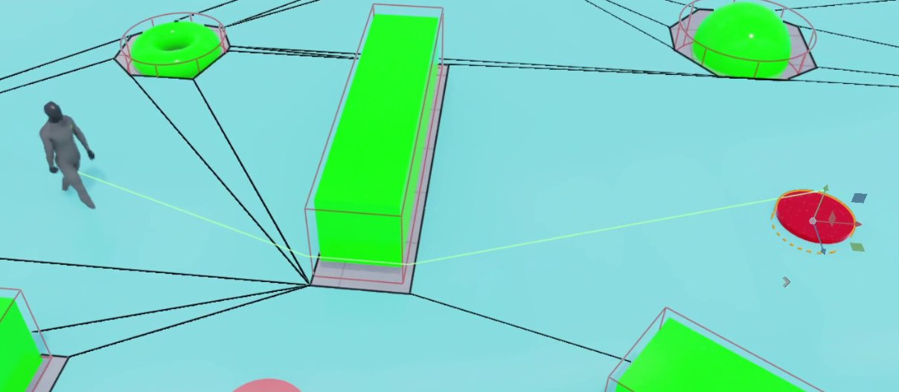
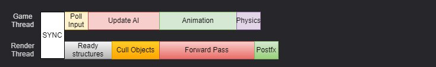
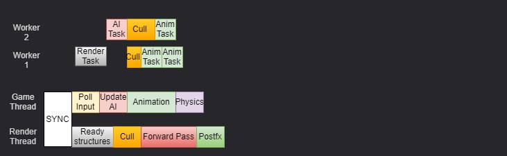
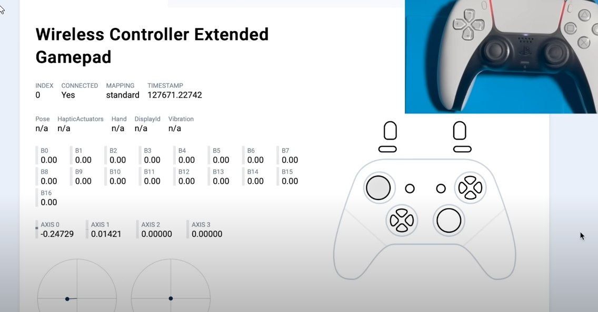

Игры всегда требовали высокой производительности системы, а игровые движки разрабатывались с учётом надлежащей поддержки многопоточных вычислений, чтобы задействовать все ресурсы компьютера. Но применение хороших абстракций сильно усложняет разработку, и хотя многопоточность открывает очень широкие возможности в играх, проблем она также добавляет порядком. Вообще разработка любого софта с поддержкой многопоточности — это отдельный вопрос, и статей на эту тему написано немало. Здесь я решил показать основные шаблоны применения системы задач, которая с большой вероятностью будет реализована в любом игровом движке, ну а также плюсы и минусы разных подходов.
Большинству игр «хватает» одного потока — это обычно подразумевает наличие главного треда, где выполняются все игровые задачи (обработка ввода, обновление мира, рендеринг и т. п.) для каждого кадра. И такая модель последовательных вычислений сохранялась очень долго, да и сейчас применяется в большом числе игр, особенно мобильных, задействуя ресурсы одного ядра. Есть, конечно, хорошо выделяемые задачи вроде загрузки текстур, звуков, но это скорее исключение в силу обособленности данных для таких задач. Чтобы сделать исключение правилом, разработчики игровых движков приучают пользователей этих самых движков разделять игровые «циклы» на независимые «задачи», которые могут выполняться отдельно в «менеджере задач», который уже, в свою очередь, может запускать их на разных ядрах. Профит тут, конечно, очевидный — параллельное выполнение — это основной фактор повышения производительности игр.
Что ещё можно вынести в другой поток без особого ущерба для игры?
Игры как системы мягкого реального времени проектируются с учётом взаимодействия с конечным устройством, получившимся в ходе естественных испытаний матушки-природы, среднее время отклика которого находится в интервале 0.1—1 с. Для большинства игроков частота взаимодействий определяется частотой кадров (на самом деле это не совсем так), которая указывает, сколько кадров (изображений) отображается в секунду. В настоящее время де-факто стандарт предполагает частоту 60 кадров в секунду, что даёт 1/60 с ≈ 16,667 мс на обработку каждого кадра. Если это время превышается, кадр лучше пропустить — не во всех играх, конечно. Частые пропуски кадров ухудшают игровой процесс, а чтобы не слишком часто пропускать кадры, надо выносить тяжёлые вычисления из основного потока игровой логики. Затупивший на пару фреймов NPC с меньшей вероятностью привлечёт внимание игрока, чем дёрги во время игры или падение fps.
Movement
Классическая задача, с которой, наверное, начинают менять любой движок, — это апдейт позиции юнитов вне основной логики. В идеале мы можем выделить несколько потоков, каждый из которых будет выполнять свою задачу. В случае обновления движений основной поток будет заниматься рендерингом (простой случай, об этом позже), а отдельный поток будет обрабатывать логику движения объектов. Если апдейт позиций не будет запаздывать слишком сильно (на 2–5 фреймов), то игроки даже не заметят, что текущая позиция NPC «потихоньку» подтягивается к нужной. Пример из Unreal: апдейт (и movement тоже) персонажей происходит в отдельных потоках (worker-thread), поэтому если NPC «затупил», это не скажется на fps. Но и багов такой подход добавляет тоже немало, заставляя NPC пролетать сквозь стены, телепортироваться, дёргаться на ровном месте или скользить по земле. Причина бывает и другая — скорость анимации не совпадает со скоростью перемещения персонажа, а ИК ног не настроены, чтобы это компенсировать.
Physics
В CryEngine используется task-based система для обработки физики в пределах одного кадра, включая столкновения. Физический движок Havok распараллеливает проверку столкновений, чтобы ускорить обработку, особенно в сценах с большим количеством объектов. Это позволяло делать совершенно безумные вещи даже на средних ПК.
Game logic (скрипты, обработка событий и т. п.)
Игровой движок выполняет множество задач для генерации каждого кадра (отрисовку графики, симуляцию физики). Эти задачи имеют ограничения по очередности, которые необходимо соблюдать для их правильного выполнения, но они чётко определены. А вот что делать со скриптами, которые выполняются произвольно? Тут на помощь приходит идея time-task-splitting, которая очень хорошо ложится на BT/VS логику. Идея простая: есть некий визуальный скрипт, который состоит из блоков, есть время на работу с этим скриптом — запускаем блоки обработки по очереди, пока есть лимит времени. Тут важно, чтобы сами блоки гарантировали своё время выполнения, тогда последовательности блоков можно приостанавливать и переносить между фреймами. Каждый блок на схеме (это VS, visual script) выполняет определённую логику, выполнение следующего блока может быть перенесено на другой фрейм, если бюджет таймслота для этого скрипта уже превышен. При таком подходе игровой движок балансирует нагрузку даже при большом количестве игровой логики.

AI / Path-finding
Алгоритмы поиска пути направлены на нахождение кратчайшего пути между двумя заданными точками. Многие игры включают механизмы поиска пути, которые могут варьироваться от простых до гораздо более сложных. Эти механизмы в основном используются для перемещения агентов (персонажей, NPC, животных или транспортных средств) и могут играть ключевую роль в создании ощущения реалистичного искусственного интеллекта. Отличительной особенностью большинства алгоритмов поиска пути в играх является их замкнутость по данным: если вы передали достаточный для работы алгоритма объём информации, то он может работать практически не обращаясь дополнительно к внешним данным, что, конечно, делает его идеальным кандидатом для перемещения в таску и выполнения в отдельном потоке. Основным недостатком поиска пути является его большое время выполнения, даже на коротких дистанциях. Так что часто не позапускаешь и приходится идти на разные хитрости, упрощения и таймауты.

Animation
Самой распространённой задачей для системы анимаций в игре является их смешивание — двух или более анимаций, желательно чтобы они были похожи. Один из самых простых примеров — это анимации шага и бега, которые смешиваются в соответствии со скоростью персонажа.
Я тут рассказываю на пальцах, но там внутри очень много математики, матриц и зависимостей по данным, и тем не менее апдейт анимаций тоже очень хорошо выделяется из основной логики и переносится в отдельный поток для обработки.
Rendering
Про эту тему написано море статей, и каждый первый движок старается вынести рендер фрейма в отдельный поток. Это тема для отдельной статьи, так что здесь просто напомню об этом.
Unreal Engine использует два основных потока: игровой поток (Game Thread) и поток рендеринга (Render Thread), а ещё несколько дополнительных потоков для остальных задач. Игровой поток отвечает за выполнение всей игровой логики, которую игроделы напишут в блупринтах или C++. В конце каждого кадра сделана так называемая сериальная часть, где состояние объектов передаётся в поток рендеринга, а тот уже выполняет логику отрисовки и обеспечивает их отображение на экране.
Такой подход широко распространён и используется в 90% движков, потому что удобен в использовании, но имеет серьёзные недостатки в масштабируемости. Игры на анриале часто испытывают трудности с эффективным использованием более чем 4 ядер, а на консолях производительность оказывается ниже возможной, так как из 8 ядер Xbox'a 2 практически никогда не загружаются более чем на 20%. Ещё одна проблема заключается в том, что если один из потоков выполняет больше работы, чем другой, вся симуляция замедляется, потому что игровой и рендер-потоки синхронизируются в каждом кадре, и если один из них работает медленнее, это снижает общую производительность системы и как следствие ведёт к низким fps, а там включается механизм тротлинга игровой логики, который начинает пропускать фреймы, делать более длинные апдейты, выкидывать задачи, чтобы сохранить приемлемый fps. Но если игра активно использует Blueprints или сложный AI, игровой поток всегда будет сильно загружен, выполняя работу на одном ядре, а остальные ядра останутся практически незанятыми.

А тот же Naughty Dog Engine делает условно то же самое, но быстрее (ссылки на материалы дам в конце статьи).

Input / Output
В событийно-ориентированных задачах ввода/вывода (event based IO) вроде нажатий на кнопки или другие устройства ввода в результате запускается связанная задача и тред переходит в новый стейт. Обычно I/O системы делают максимально простыми и быстрыми, чтобы считать данные, минимально их проанализировать и преобразовать в локальный формат. Затем уже в локальном формате они передаются другой задаче для обработки. Например, когда в контроллере изменяется значение кнопки A (Press/Release), то состояние этой кнопки попадает в игру обычно так быстро, насколько быстро считывает их поток ввода. А вот чтобы выполнить действие для соответствующей кнопки — это уже остаётся на усмотрение игровой логики. Но, повторюсь, состояние кнопок обычно известно сразу же, как их нажали, а то, что пуха стреляет с задержкой в пару фреймов, — это уже всё игра накрутила.
В периодических задачах ввода/вывода (time based IO), к которым также относятся рендеринг фреймов и вывод звука, по истечении указанного времени некий игровой таймер отправляет сигнал и запускает выполнение периодической задачи. Стабильность времени запуска периодичной задачи важна для плавности работы игры: если, например, будет плавать время обработки звука, игра будет шипеть или щёлкать, если будет плавать время кадра — будут глитчи и дёрги, которые очень хорошо палятся игроками. Дополнительно к таким задачам можно отнести считывание всех аналоговых и цифровых данных с контроллера, например угол поворота руля или данные с гироскопов.
Задачи ввода/вывода на основе запросов (force based IO) выполняют необходимые операции в соответствии с логикой игры — пример, вибрация контроллера. Или другой пример — принудительный двойной опрос гироскопов, чтобы определить опрокидывание или резкий поворот контроллера для выполнения специальных действий в игре.
Вот эта вещичка на первых ревизиях страдала западанием значений гироскопов при резком вертикальном повороте на 180°. Повторить такое сложно, но пользователи сумели и пришли с баг-репортами: значение зависало в граничном +1.f, и персонаж начинал крутиться на месте.
Или это ещё может использоваться, чтобы проверить контроллер на дрифт стиков: у контроллера плойки первых ревизий со временем проявлялся дрифт стиков в любом положении, причём дрифт был виден только при опросе с force-модом, а обычное чтение давало усреднённое значение и немного «плавало». Sony долго не хотела признавать эту проблему, но втихую разослала по студиям рекомендацию по force-опросу стиков и алгоритм корректировки дрифта. Потом это всё равно всплыло, и контроллеры меняли по гарантии. На скрине полугодовалый контроллер выдаёт дрифт на обоих стиках, но левый мы читаем с force-модом, а правый читается как обычно. При этом иногда с правого тоже прилетали некорректные значения, что вызывало дёрги персонажей и оружия. Баг, если что, из 2018 года, так что вам, скорее всего, уже не грозит.

Взаимодействие с пользователем
Задачи, зависящие от состояния игрока, являются одними из самых критичных в играх. Эти задачи управляют состоянием окружения вокруг игрока — это обычно отдельная часть логики, хоть и связанная с общим состоянием игры. Большинство игр — player-first (игроко-центричны), т. е. изменяют своё состояние в ответ на действия игрока, меняя в зависимости от обработанных событий мир и выполняя необходимые действия. Это очень широкое понятие, под которое в той или иной степени подходит большинство выполняемой игрой логики. Явным примером такой системы является задача взаимодействия с игроком через пользовательский интерфейс и получение пользовательского ввода через этот интерфейс. Особой производительности тут не нужно, но разработчики стараются вынести обработку UI в отдельную систему, которая крутится в своём треде, чтобы снизить зависимость от неё основной логики. Здесь вообще не важна скорость отклика от пользователя, и по моим наблюдениям больше важна плавность и визуальное подтверждение «работы», чем время выполнения задач. Т. е. в порядке вещей, что UI «условно подтормаживает» при показе каких-то данных, но если это сопровождается красивыми и правильными анимациями, то такой UI воспринимается лучше, чем быстрый, но без анимаций и переходов между «сценами/виджетами».
Группировка / менеджеры задач
Когда в системе слишком много задач, управлять ими становится сложно. В таком случае имеет смысл классифицировать задачи в зависимости от их характеристик.
По временной классификации (temporal groups) входные данные (например, сетевое взаимодействие, работа с телеметрией), которые должны быть прочитаны в одинаковые или похожие периоды, могут быть объединены и прочитаны в рамках одной задачи. Если различные числовые данные читаются периодически, то чтение нескольких входных данных в отдельных задачах для каждого входа может быть выполнено в одной задаче. Точно так же одну задачу можно использовать с механизмом выбора для чтения сообщений с нескольких различных UDP-портов — задачи телеметрии.
По последовательной классификации (chain sequence) задачи, которые выполняются друг за другом, всегда можно объединить в одну задачу и обработать большим пакетом, что снизит общее время работы. Например, при обновлении количества хелсы или патронов, которые могут меняться чаще одного раза за фрейм, выгоднее вместо того чтобы обработать отдельные задачи, сложить их в очередь или буфер и обработать в конце фрейма или по вызову некоторого триггера. Обработка задач в группах ведёт к лучшему локалити в данных и снижению времени выполнения.
По классификации вызова (parent sequence) опциональные задачи могут/должны быть выполнены прямо во время работы родительской, которая их вызвала.
Взаимодействие между задачами
После того как задача считывает данные из внешней системы, может возникнуть необходимость передать эти данные другой задаче для обработки. Самый простой подход в такой ситуации — это скопировать данные в общую область и предоставить к ним доступ другим задачам. Тут мы или используем средства синхронизации от ОС и мьютексы, либо пишем свои примитивы вроде спинлоков (если интересно почитать про приключения спинлоков, то это тут). Несмотря на свою простоту и широкое применение, мьютексы очень тормозные, а тормоза мы, конечно, не любим.
Для большого круга задач в игровых движках наиболее предпочтительным методом является передача данных через очереди сообщений. Эта структура может быть использована, если используемый SDK/OS поддерживает межзадачную передачу сообщений. Или всегда можно сделать похожий механизм с использованием очередей (приоритетной очереди), тогда мьютекс будет использоваться только для защиты хвоста очереди или какой-то функции, которая отвечает за добавление сообщений. Поскольку весь механизм таких очередей получается простым, риск блокировки почти отсутствует. А если добавить контракт на подготовку и обработку сообщений за пределами очереди, то там остаётся только добавление или удаление хвоста.
В этом случае задача, поставляющая данные, помещает их в очередь, а задача, обрабатывающая данные, извлекает данные из очереди поочерёдно. Причина, по которой этот подход предпочтителен, заключается в том, что можно разрабатывать легко управляемые системы и избежать использования механизмов синхронизации, подобных мьютексам. НО... как всегда, есть какое-нибудь «но». Не всё можно решить через очереди сообщений, или затраты на их разработку, использование и поддержку становятся настолько большими, что проще вернуться обратно к блокировкам.
Как это всё подружить?
Большинство современных игровых движков предоставляют каждой таске отдельный блок данных из пула, который можно заполнить по своему усмотрению. Обычно это несколько сотен байт или килобайт памяти, который задача таскает с собой, или индекс в пуле данных. Но можно сделать и наоборот, когда таска может выполняться с использованием нескольких потоков, и два потока могут обращаться к одним и тем же данным, не заботясь, что какие-то из них могут быть переписаны или обработаны дважды, как это, например, сделано для системы трассировки пуль, грубого подсчёта траекторий или некоторых других видов специфичных задач. Всего можно выделить четыре основных типа данных, которые используются для построения task-based архитектуры внутри игрового движка; все остальные системы будут либо комбинацией, либо вариацией этих типов.
Simple task
Простая задача — состоит из одного блока логики, который обрабатывается единственным потоком в задаче. Сообщения, полученные задачей, изменяют активное состояние, а результат может быть передан в другие задачи. Поскольку задача однопоточная, следующее сообщение может быть направлено только после того, как текущее сообщение будет обработано.
Multi Threaded Manager
Задача менеджера потоков (воркеров, worker) — управлять некоторой логикой (задачей, воркером), которая обрабатывается в отдельном потоке (примеры: rendering, sound, texture loading). Сообщения, полученные задачей, сначала направляются в соответствующий поток, затем обрабатываются логикой соответствующего потока. Здесь следующее сообщение может быть направлено немедленно после обработки текущего, поскольку обработка сообщений выполняется в отдельном потоке. Примеры: загрузка ресурсов, система сейвов, обновление анимаций.
Single Thread Manager
Частный случай предыдущего, но более простой для реализации и поэтому широко используемый (примеры: логический тред, game main thread). Обычно это основная игровая логика с прибитыми тредами, чтобы избежать миграций, и воркеры для выполнения задач.
Multi Task Manager
Менеджер задач схож с менеджером потоков. Может быть реализован как в одном, так и в нескольких потоках; основное отличие заключается в том, что задачи не привязаны к потокам и могут быть вытеснены, остановлены и приостановлены, а данные не могут быть разделены между задачами. Сообщения являются единственным средством для общения и синхронизации.
Плюсы и минусы каждого подхода
| Простая задача | Менеджер с одним потоком | Менеджер с несколькими потоками | Менеджер с несколькими задачами | |
|---|---|---|---|---|
| Примеры | Старые движки до начала 2000-х | Stronghold, AoE2/3, игры до конца 2000-х, ID Tech 1-4, UE 1-3 | UE 4-5, Unity, Refractor Engine, большинство современных движков | CryEngine, Frostbite, REDEngine, Rage, ID Tech 5,6, Naughty Dog Engine, Glacier 2+ |
| Сложность | Простая. Необходимо обработать одну задачу. | Сложная. Требуется управление созданием, удалением и передачей сообщений. | Сложная. Проблемы параллелизма потоков при совместном использовании данных. | Сложная. Взаимодействие через сообщения и колбеки, обращение напрямую к выполняемой задаче очень затратно. |
| Маршрутизация сообщений | Простая. Сообщения просто передаются к обработчику текущей задачи. | Сложнее. Сообщения нужно отправлять в соответствующий объект. Все объекты используют одну очередь сообщений, поэтому накладные расходы на маршрутизацию будут выше. | Сложная. Сообщения нужно маршрутизировать не только между потоками, но и между задачами. | Сложная. Задача должна иметь данные для работы и избегать сообщений. |
| Куча и стек | Используется одна куча и один стек. | Все объекты используют одну кучу и один стек. | Все потоки используют одну кучу. Каждый поток имеет свой стек. | Каждая задача имеет свой стек и кучу. |
| Надёжность | Надёжная. Куча и стек не разделяются. | Ненадёжная. Сбой в одной задаче приведёт к сбою всего треда. Повреждение стека и кучи повлияет на все задачи. | Средняя надёжность. Сбой в потоке минимально повлияет на другие потоки. Повреждение стека потока затронет только этот поток. Повреждение кучи или переполнение могут повлиять на другие задачи. | Высокая надёжность. Каждая задача имеет свой стек и кучу. Память одной задачи не должна влиять (в теории) на другие задачи. |
| Средства общения | Сообщения и доступ к памяти. | Сообщения и доступ к памяти. | Сообщения и доступ к памяти. Однако доступ к памяти должен учитывать проблемы параллелизма. | Только сообщения. |
| Производительность | Высокая. Зависит только от реализации. | Высокая. Используется один поток с одним стеком, это даёт лучшую локальность. | Средняя. Накладные расходы на переключение потоков снижают производительность. Локальность хуже из-за отдельных стеков. | Низкая. Накладные расходы на переключение задач гораздо выше, чем на переключение потоков. Локальность наихудшая: для каждой задачи используется отдельный стек и куча. |
| Масштабируемость | Нет. Полное выполнение находится в одном потоке, производительность нельзя улучшить добавлением процессоров. | Нет. Полное выполнение находится в одном потоке, производительность нельзя улучшить добавлением процессоров. | Средняя. Каждая задача выполняется в отдельном потоке, добавление процессоров позволит выполнять несколько потоков одновременно на разных процессорах. Конкуренция за кучу ограничивает масштабируемость. | Высокая. Задачи имеют свои потоки, стеки и кучи. Ресурсы не разделяются между задачами, система будет хорошо масштабироваться при добавлении процессоров. |
Ссылки на материалы к статье
- Don't Dread Threads — четыре простых шага параллелизации: декомпозиция данных, определение задач, потоки (API) и валидация.
- Task-based Multithreading — How to Program for 100 Cores — задачи против потоков, пулы потоков, приоритеты, обработка зависимостей и DX11 deferred contexts.
- GTS — Intel Games Task Scheduler — планировщик задач для движков (проект остановлен).
- Efficient Scaling in Game Engines.
- Evan Todd — Poor Man's Threading Architecture — статьи о task-based архитектуре в играх.
- Destiny's Multithreaded Rendering Architecture (Natalya Tatarchuk, GDC 2015).
- Parallelizing the Naughty Dog Engine Using Fibers — fiber-based job system для The Last of Us Remastered на 60 fps.